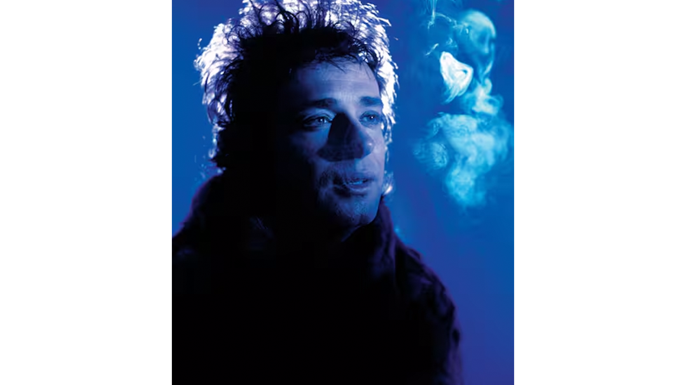
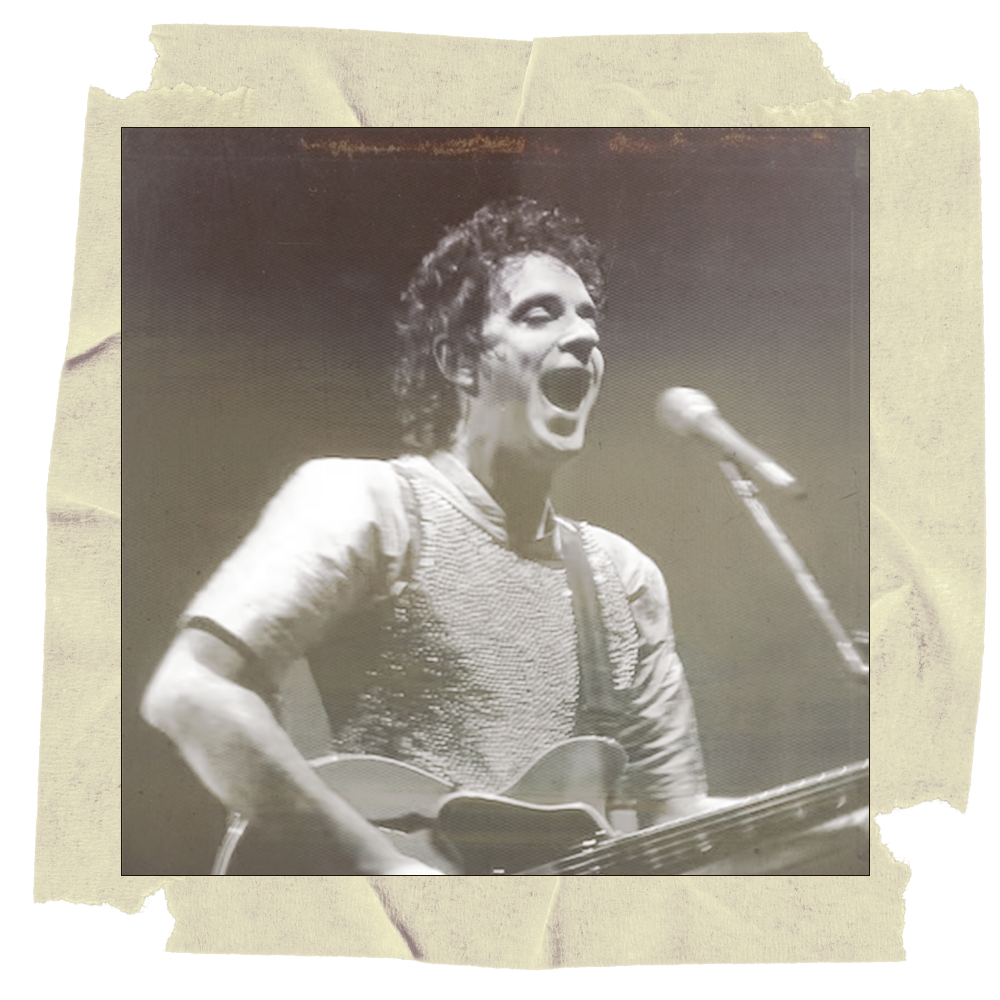
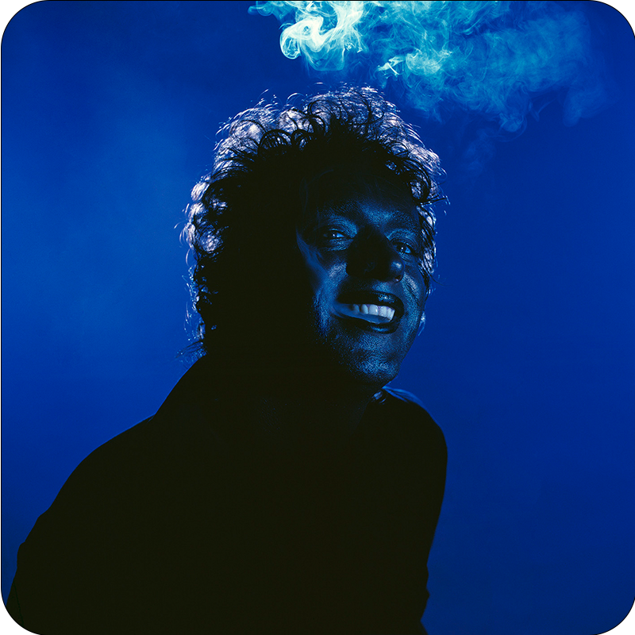
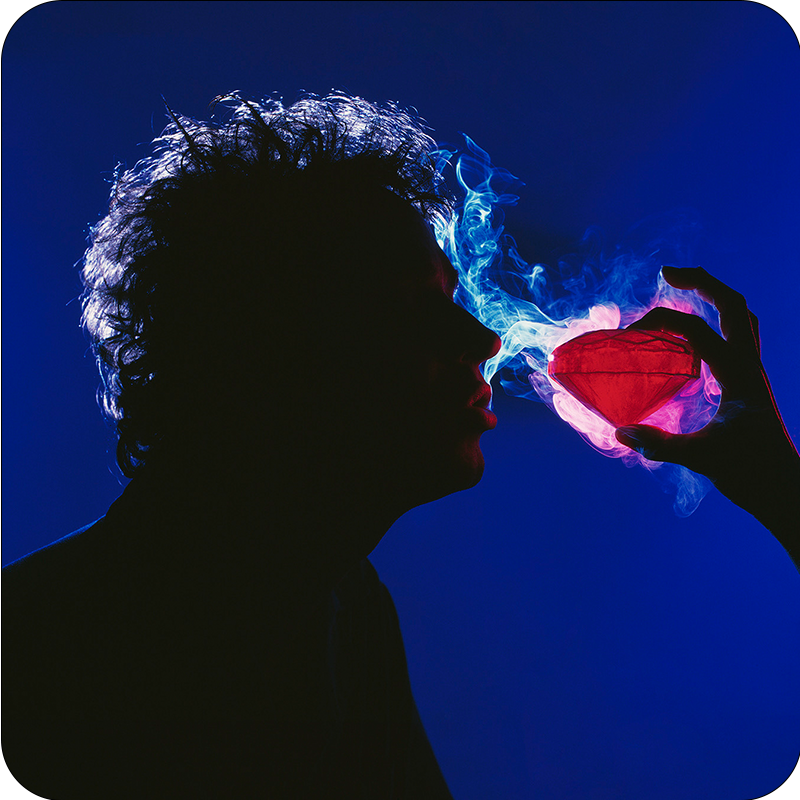
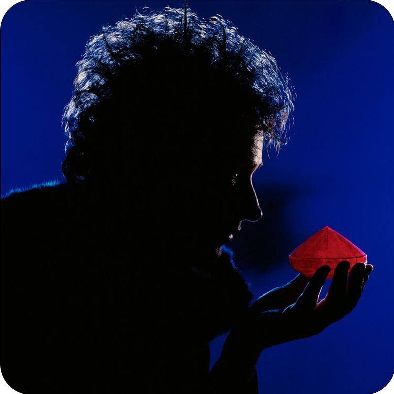
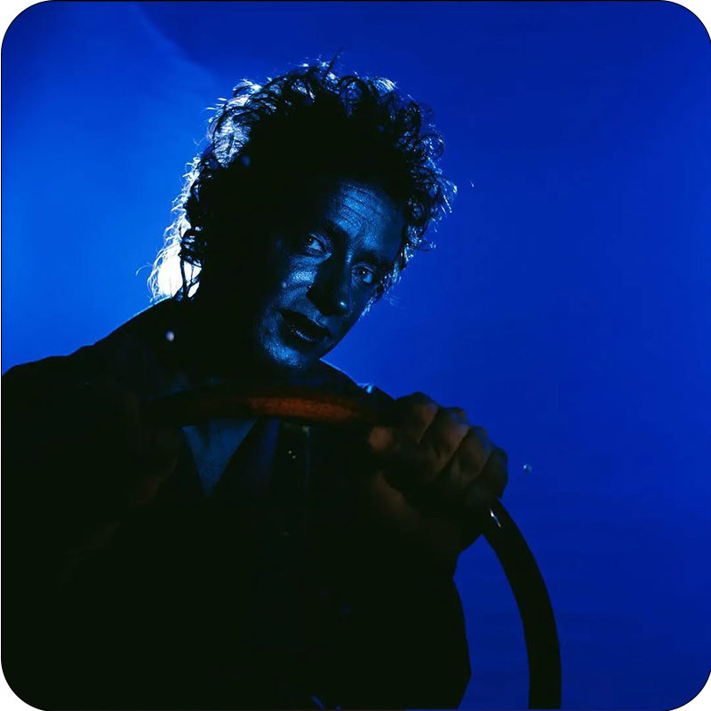

Bocanada es una cantidad de aire o humo que se toma o expulsa de golpe, o una ráfaga breve que llega y se va rápidamente. El álbum Bocanada de Cerati refleja esa idea: sonidos y emociones fugaces que llegan y se van, pero que dejan una marca. Es un disco experimental que marca el inicio de su carrera solista y explora temas como el amor, la pérdida y la transformación.
BOCANADA
"Cuando no hay más que decirnos, habla el humo" Gustavo Cerati
¿Qué es Bocanada?

Historia de Bocanada

Bocanada, lanzado el 28 de junio de 1999, marcó la consolidación de Gustavo Cerati como solista tras la disolución de Soda Stereo en 1997. Tras una pausa luego del cierre de la banda, Cerati exploró la música electrónica junto a Flavius Etcheto en el proyecto Ocio, influencia clave en el sonido experimental de este álbum.
Géneros de música que involucra Bocanada
El álbum Bocanada de Gustavo Cerati fusiona géneros como art rock, música electrónica (trip hop, downtempo, neopsicodelia, pop electrónico, dream pop), space rock, pop de autor, rock alternativo, rock sinfónico, y también incorpora influencias de bolero, jazz, hip hop y blues.
Sesión de fotos




Las fotos, realizadas por Gaby Herbstein con una Hasselblad 500 CM en formato medio, fueron seleccionadas junto a Gustavo, Ceci Amenábar y Ale Ros. El peinado fue de Oscar (Roho), el retoque de Sofía Temperley y el diseño de ROS.
Escuche Bocanada en Spotify
Las canciones destacadas de Bocanada suman más de 350 millones de reproducciones, y el álbum completo acumula cientos de millones en Spotify, siendo uno de los más escuchados de Cerati y del rock latinoamericano.